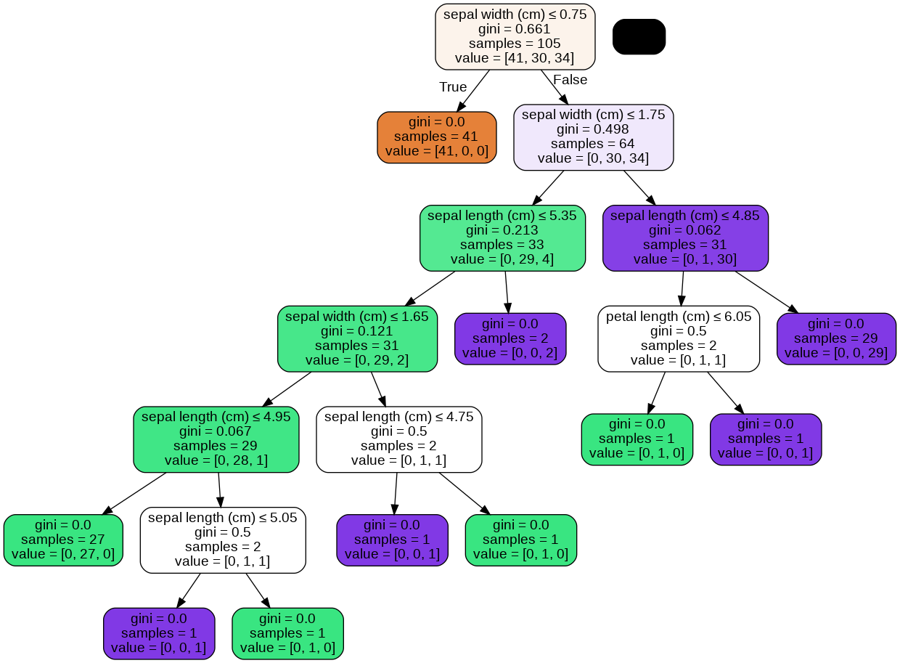

Tugas
Contents
Tugas#
Menghitung Jarak data#
import pandas as pd
import numpy as np
# Create dataset from Google Drive
dataset_url = "https://raw.githubusercontent.com/Nauvaldi/Dataset/main/test.csv"
df = pd.read_csv(dataset_url)
df
| Age | BusinessTravel | DailyRate | Department | DistanceFromHome | Education | EducationField | EmployeeCount | EmployeeNumber | EnvironmentSatisfaction | ... | RelationshipSatisfaction | StandardHours | StockOptionLevel | TotalWorkingYears | TrainingTimesLastYear | WorkLifeBalance | YearsAtCompany | YearsInCurrentRole | YearsSinceLastPromotion | YearsWithCurrManager | |
|---|---|---|---|---|---|---|---|---|---|---|---|---|---|---|---|---|---|---|---|---|---|
| 0 | 34 | Travel_Rarely | 790 | Sales | 24 | 4 | Medical | 1 | 1489 | 1 | ... | 3 | 80 | 0 | 16 | 2 | 4 | 15 | 9 | 10 | 10 |
| 1 | 35 | Travel_Rarely | 660 | Sales | 7 | 1 | Life Sciences | 1 | 1492 | 4 | ... | 1 | 80 | 1 | 1 | 3 | 3 | 1 | 0 | 0 | 0 |
| 2 | 24 | Travel_Frequently | 381 | Research & Development | 9 | 3 | Medical | 1 | 1494 | 2 | ... | 3 | 80 | 0 | 4 | 2 | 2 | 0 | 0 | 0 | 0 |
| 3 | 24 | Non-Travel | 830 | Sales | 13 | 2 | Life Sciences | 1 | 1495 | 4 | ... | 3 | 80 | 1 | 1 | 2 | 3 | 1 | 0 | 0 | 0 |
| 4 | 44 | Travel_Frequently | 1193 | Research & Development | 2 | 1 | Medical | 1 | 1496 | 2 | ... | 2 | 80 | 0 | 16 | 2 | 2 | 2 | 2 | 2 | 2 |
| ... | ... | ... | ... | ... | ... | ... | ... | ... | ... | ... | ... | ... | ... | ... | ... | ... | ... | ... | ... | ... | ... |
| 407 | 36 | Travel_Frequently | 884 | Research & Development | 23 | 2 | Medical | 1 | 2061 | 3 | ... | 3 | 80 | 1 | 17 | 3 | 3 | 5 | 2 | 0 | 3 |
| 408 | 39 | Travel_Rarely | 613 | Research & Development | 6 | 1 | Medical | 1 | 2062 | 4 | ... | 1 | 80 | 1 | 9 | 5 | 3 | 7 | 7 | 1 | 7 |
| 409 | 27 | Travel_Rarely | 155 | Research & Development | 4 | 3 | Life Sciences | 1 | 2064 | 2 | ... | 2 | 80 | 1 | 6 | 0 | 3 | 6 | 2 | 0 | 3 |
| 410 | 49 | Travel_Frequently | 1023 | Sales | 2 | 3 | Medical | 1 | 2065 | 4 | ... | 4 | 80 | 0 | 17 | 3 | 2 | 9 | 6 | 0 | 8 |
| 411 | 34 | Travel_Rarely | 628 | Research & Development | 8 | 3 | Medical | 1 | 2068 | 2 | ... | 1 | 80 | 0 | 6 | 3 | 4 | 4 | 3 | 1 | 2 |
412 rows × 34 columns
# Show dataset shape
number_of_columns = df.shape[1]
# Show all columns for dataset
pd.set_option('display.max_columns', number_of_columns)
pd.set_option('display.max_rows', number_of_columns)
# Show all columns from dataframe
df.columns
Index(['Age', 'BusinessTravel', 'DailyRate', 'Department', 'DistanceFromHome',
'Education', 'EducationField', 'EmployeeCount', 'EmployeeNumber',
'EnvironmentSatisfaction', 'Gender', 'HourlyRate', 'JobInvolvement',
'JobLevel', 'JobRole', 'JobSatisfaction', 'MaritalStatus',
'MonthlyIncome', 'MonthlyRate', 'NumCompaniesWorked', 'Over18',
'OverTime', 'PercentSalaryHike', 'PerformanceRating',
'RelationshipSatisfaction', 'StandardHours', 'StockOptionLevel',
'TotalWorkingYears', 'TrainingTimesLastYear', 'WorkLifeBalance',
'YearsAtCompany', 'YearsInCurrentRole', 'YearsSinceLastPromotion',
'YearsWithCurrManager'],
dtype='object')
Data Asimetris Biner
-Over18
-OverTime
df[["Over18", "OverTime"]].head(5)
| Over18 | OverTime | |
|---|---|---|
| 0 | Y | Yes |
| 1 | Y | No |
| 2 | Y | Yes |
| 3 | Y | No |
| 4 | Y | Yes |
Ubah Value ke 0/1#
Jika Yes/Y = 1
Jika No/N = 0
# Over18 code
over18_for_yes = "Y"
over18_for_no = "N"
# binary value
value_of_one = 1
value_of_zero = 0
def change_code_over18_to_biner(Over18):
return value_of_one if Over18 == over18_for_yes else value_of_zero
# Update all values of 'Over18' series
df["Over18"] = df["Over18"].apply(change_code_over18_to_biner)
# Overtime code
overtime_for_yes = "Yes"
overtime_for_no = "N0"
# binary value
value_of_one = 1
value_of_zero = 0
def change_code_overtime_to_biner(OverTime):
return value_of_one if OverTime == overtime_for_yes else value_of_zero
# Update all values of 'OverTime' series
df["OverTime"] = df["OverTime"].apply(change_code_overtime_to_biner)
df[["Over18", "OverTime"]].head(5)
| Over18 | OverTime | |
|---|---|---|
| 0 | 1 | 1 |
| 1 | 1 | 0 |
| 2 | 1 | 1 |
| 3 | 1 | 0 |
| 4 | 1 | 1 |
# CONSTAN VARIABLE
DECREMENT_BY_ONE = 1
INCREMENT_BY_ONE = 1
CONTINGENCY_TABLE_VALUE = {
"q" : (1,1),
"r" : (1,0),
"s" : (0,1),
"t" : (0,0),
}
def get_series(df, idx, series):
return df.loc[(idx), series]
def get_dissimilarity_dataset(df, series_index = [], series = []):
first_series = get_series(df, series_index[0], series)
second_series = get_series(df, series_index[1], series)
dataset = pd.concat([first_series,second_series],axis=1)
return dataset.T
get_dissimilarity_dataset(df, [1,2], ["Over18", "OverTime"]).T
| 1 | 2 | |
|---|---|---|
| Over18 | 1 | 1 |
| OverTime | 0 | 1 |
df.loc[0:5, ["Over18", "OverTime"]]
| Over18 | OverTime | |
|---|---|---|
| 0 | 1 | 1 |
| 1 | 1 | 0 |
| 2 | 1 | 1 |
| 3 | 1 | 0 |
| 4 | 1 | 1 |
| 5 | 1 | 0 |
def count_contingency_value(df, start_index = 0, last_index = 1):
CONTINGENCY_VALUE = {
"q" : 0,
"r" : 0,
"s" : 0,
"t" : 0,
}
column_range = df.shape[1]
for column in range(column_range):
for value in CONTINGENCY_TABLE_VALUE:
item = list((tuple(df.loc[(start_index):(last_index), df.columns[column]]) == CONTINGENCY_TABLE_VALUE[value], value))
if item[0] == True:
if item[1] == "q":
CONTINGENCY_VALUE["q"] += 1
if item[1] == "r":
CONTINGENCY_VALUE["r"] += 1
if item[1] == "s":
CONTINGENCY_VALUE["s"] += 1
if item[1] == "t":
CONTINGENCY_VALUE["t"] += 1
return CONTINGENCY_VALUE
# d(1,2)
df_1_2 = get_dissimilarity_dataset(df, [1,2], ["Over18","OverTime"])
c_d_1_2 = count_contingency_value(df_1_2, 1, 2)
# d(1,3)
df_1_3 = get_dissimilarity_dataset(df, [1,3], ["Over18","OverTime"])
c_d_1_3 = count_contingency_value(df_1_3, 1, 3)
# d(1,4)
df_1_4 = get_dissimilarity_dataset(df, [1,4], ["Over18","OverTime"])
c_d_1_4 = count_contingency_value(df_1_4, 1, 4)
# d(1,5)
df_1_5 = get_dissimilarity_dataset(df, [1,5], ["Over18","OverTime"])
c_d_1_5 = count_contingency_value(df_1_5, 1, 5)
Dissimilarity Binary Assymetric Value Formula#
\[ \frac {r+s}{q+r+s} \]
def measure_dissimilarity_binary_value_assymetric_distance(contingency_value):
return (contingency_value["r"] + contingency_value["s"]) / (contingency_value["q"] + contingency_value["r"] + contingency_value["s"])
d_1_2 = measure_dissimilarity_binary_value_assymetric_distance(c_d_1_2)
d_1_3 = measure_dissimilarity_binary_value_assymetric_distance(c_d_1_3)
d_1_4 = measure_dissimilarity_binary_value_assymetric_distance(c_d_1_4)
d_1_5 = measure_dissimilarity_binary_value_assymetric_distance(c_d_1_5)
d_1_2
0.5
d_1_3
0.0
d_1_4
0.5
d_1_5
0.0
Menghitung Jarak Data Numerik#
\[ \sqrt{\sum_{i=1}^{n}{\left (x_{i} - y_{j} \right )}^{2}}\]
-Age, DistanceFromHome, TotalWorkingYears, YearsAtCompany, YearsInCurrentRole
from scipy.spatial import distance_matrix
df[["Age","DistanceFromHome","YearsInCurrentRole","TotalWorkingYears","YearsAtCompany"]].head(5)
| Age | DistanceFromHome | YearsInCurrentRole | TotalWorkingYears | YearsAtCompany | |
|---|---|---|---|---|---|
| 0 | 34 | 24 | 9 | 16 | 15 |
| 1 | 35 | 7 | 0 | 1 | 1 |
| 2 | 24 | 9 | 0 | 4 | 0 |
| 3 | 24 | 13 | 0 | 1 | 1 |
| 4 | 44 | 2 | 2 | 16 | 2 |
data = pd.read_csv(dataset_url)
df = pd.DataFrame(data,columns= ["Age","DistanceFromHome","YearsInCurrentRole","TotalWorkingYears","YearsAtCompany"])
df.head(5)
| Age | DistanceFromHome | YearsInCurrentRole | TotalWorkingYears | YearsAtCompany | |
|---|---|---|---|---|---|
| 0 | 34 | 24 | 9 | 16 | 15 |
| 1 | 35 | 7 | 0 | 1 | 1 |
| 2 | 24 | 9 | 0 | 4 | 0 |
| 3 | 24 | 13 | 0 | 1 | 1 |
| 4 | 44 | 2 | 2 | 16 | 2 |
Distance_matrix = pd.DataFrame(distance_matrix(df.values,df.values),index = df.index,columns=[df.index])
Distance_matrix.head(5)
| 0 | 1 | 2 | 3 | 4 | 5 | 6 | 7 | 8 | 9 | 10 | 11 | 12 | 13 | 14 | 15 | 16 | ... | 395 | 396 | 397 | 398 | 399 | 400 | 401 | 402 | 403 | 404 | 405 | 406 | 407 | 408 | 409 | 410 | 411 | |
|---|---|---|---|---|---|---|---|---|---|---|---|---|---|---|---|---|---|---|---|---|---|---|---|---|---|---|---|---|---|---|---|---|---|---|---|
| 0 | 0.000000 | 28.142495 | 27.838822 | 26.888659 | 28.319605 | 10.723805 | 27.946377 | 34.322005 | 24.289916 | 20.469489 | 29.832868 | 32.664966 | 24.819347 | 29.916551 | 29.086079 | 13.527749 | 23.811762 | ... | 18.814888 | 18.357560 | 28.319605 | 12.124356 | 25.922963 | 28.827071 | 18.411953 | 16.941074 | 21.931712 | 8.660254 | 21.610183 | 26.758176 | 12.449900 | 21.587033 | 26.057628 | 27.477263 | 22.649503 |
| 1 | 28.142495 | 0.000000 | 11.618950 | 12.529964 | 18.330303 | 19.773720 | 10.535654 | 20.639767 | 9.695360 | 18.027756 | 11.135529 | 9.219544 | 8.831761 | 17.349352 | 8.831761 | 25.826343 | 13.228757 | ... | 10.000000 | 18.520259 | 10.198039 | 16.941074 | 20.880613 | 7.937254 | 13.076697 | 22.912878 | 32.171416 | 33.867388 | 13.453624 | 10.677078 | 23.086793 | 12.884099 | 11.269428 | 24.020824 | 6.708204 |
| 2 | 27.838822 | 11.618950 | 0.000000 | 5.099020 | 24.515301 | 17.606817 | 11.747340 | 31.606961 | 12.767145 | 25.377155 | 9.000000 | 9.486833 | 6.403124 | 26.645825 | 9.327379 | 23.065125 | 13.490738 | ... | 14.456832 | 24.738634 | 18.138357 | 18.493242 | 24.392622 | 14.491377 | 10.099505 | 20.688161 | 36.138622 | 34.928498 | 14.071247 | 6.403124 | 23.194827 | 18.894444 | 8.831761 | 30.983867 | 11.401754 |
| 3 | 26.888659 | 12.529964 | 5.099020 | 0.000000 | 27.404379 | 16.492423 | 15.165751 | 32.542280 | 15.588457 | 25.729361 | 13.674794 | 12.649111 | 9.000000 | 28.530685 | 12.767145 | 20.149442 | 16.613248 | ... | 15.198684 | 23.748684 | 20.760539 | 17.663522 | 27.622455 | 17.088007 | 11.135529 | 17.262677 | 35.637059 | 34.467376 | 16.552945 | 9.848858 | 22.803509 | 20.566964 | 12.000000 | 33.196385 | 12.961481 |
| 4 | 28.319605 | 18.330303 | 24.515301 | 27.404379 | 0.000000 | 25.278449 | 17.521415 | 16.431677 | 14.212670 | 13.820275 | 18.110770 | 22.068076 | 20.149442 | 7.937254 | 19.235384 | 33.181320 | 13.000000 | ... | 15.033296 | 19.974984 | 8.944272 | 20.904545 | 6.480741 | 15.198684 | 19.672316 | 32.171416 | 27.000000 | 30.116441 | 16.340135 | 21.400935 | 22.693611 | 11.832160 | 20.223748 | 9.539392 | 15.524175 |
5 rows × 412 columns
## Membulatkan bilangan hingga 1 desimal
Distance_matrix.round(decimals=1,out=None).head(5)
| 0 | 1 | 2 | 3 | 4 | 5 | 6 | 7 | 8 | 9 | 10 | 11 | 12 | 13 | 14 | 15 | 16 | ... | 395 | 396 | 397 | 398 | 399 | 400 | 401 | 402 | 403 | 404 | 405 | 406 | 407 | 408 | 409 | 410 | 411 | |
|---|---|---|---|---|---|---|---|---|---|---|---|---|---|---|---|---|---|---|---|---|---|---|---|---|---|---|---|---|---|---|---|---|---|---|---|
| 0 | 0.0 | 28.1 | 27.8 | 26.9 | 28.3 | 10.7 | 27.9 | 34.3 | 24.3 | 20.5 | 29.8 | 32.7 | 24.8 | 29.9 | 29.1 | 13.5 | 23.8 | ... | 18.8 | 18.4 | 28.3 | 12.1 | 25.9 | 28.8 | 18.4 | 16.9 | 21.9 | 8.7 | 21.6 | 26.8 | 12.4 | 21.6 | 26.1 | 27.5 | 22.6 |
| 1 | 28.1 | 0.0 | 11.6 | 12.5 | 18.3 | 19.8 | 10.5 | 20.6 | 9.7 | 18.0 | 11.1 | 9.2 | 8.8 | 17.3 | 8.8 | 25.8 | 13.2 | ... | 10.0 | 18.5 | 10.2 | 16.9 | 20.9 | 7.9 | 13.1 | 22.9 | 32.2 | 33.9 | 13.5 | 10.7 | 23.1 | 12.9 | 11.3 | 24.0 | 6.7 |
| 2 | 27.8 | 11.6 | 0.0 | 5.1 | 24.5 | 17.6 | 11.7 | 31.6 | 12.8 | 25.4 | 9.0 | 9.5 | 6.4 | 26.6 | 9.3 | 23.1 | 13.5 | ... | 14.5 | 24.7 | 18.1 | 18.5 | 24.4 | 14.5 | 10.1 | 20.7 | 36.1 | 34.9 | 14.1 | 6.4 | 23.2 | 18.9 | 8.8 | 31.0 | 11.4 |
| 3 | 26.9 | 12.5 | 5.1 | 0.0 | 27.4 | 16.5 | 15.2 | 32.5 | 15.6 | 25.7 | 13.7 | 12.6 | 9.0 | 28.5 | 12.8 | 20.1 | 16.6 | ... | 15.2 | 23.7 | 20.8 | 17.7 | 27.6 | 17.1 | 11.1 | 17.3 | 35.6 | 34.5 | 16.6 | 9.8 | 22.8 | 20.6 | 12.0 | 33.2 | 13.0 |
| 4 | 28.3 | 18.3 | 24.5 | 27.4 | 0.0 | 25.3 | 17.5 | 16.4 | 14.2 | 13.8 | 18.1 | 22.1 | 20.1 | 7.9 | 19.2 | 33.2 | 13.0 | ... | 15.0 | 20.0 | 8.9 | 20.9 | 6.5 | 15.2 | 19.7 | 32.2 | 27.0 | 30.1 | 16.3 | 21.4 | 22.7 | 11.8 | 20.2 | 9.5 | 15.5 |
5 rows × 412 columns
Diskritisasi#
import pandas as pd
import numpy as np
# Create dataset from Google Drive
dataset_url = "https://raw.githubusercontent.com/Nauvaldi/Dataset/main/Iris.csv"
df = pd.read_csv(dataset_url)
df
| Id | SepalLengthCm | SepalWidthCm | PetalLengthCm | PetalWidthCm | Species | |
|---|---|---|---|---|---|---|
| 0 | 1 | 5.1 | 3.5 | 1.4 | 0.2 | Iris-setosa |
| 1 | 2 | 4.9 | 3.0 | 1.4 | 0.2 | Iris-setosa |
| 2 | 3 | 4.7 | 3.2 | 1.3 | 0.2 | Iris-setosa |
| 3 | 4 | 4.6 | 3.1 | 1.5 | 0.2 | Iris-setosa |
| 4 | 5 | 5.0 | 3.6 | 1.4 | 0.2 | Iris-setosa |
| ... | ... | ... | ... | ... | ... | ... |
| 145 | 146 | 6.7 | 3.0 | 5.2 | 2.3 | Iris-virginica |
| 146 | 147 | 6.3 | 2.5 | 5.0 | 1.9 | Iris-virginica |
| 147 | 148 | 6.5 | 3.0 | 5.2 | 2.0 | Iris-virginica |
| 148 | 149 | 6.2 | 3.4 | 5.4 | 2.3 | Iris-virginica |
| 149 | 150 | 5.9 | 3.0 | 5.1 | 1.8 | Iris-virginica |
150 rows × 6 columns
from sklearn.preprocessing import KBinsDiscretizer
est = KBinsDiscretizer(n_bins=4, encode='ordinal', strategy='uniform')
df['SepalLengthCm'] = est.fit_transform(df[['SepalLengthCm']])
df['SepalLengthCm']
0 0.0
1 0.0
2 0.0
3 0.0
4 0.0
...
145 2.0
146 2.0
147 2.0
148 2.0
149 1.0
Name: SepalLengthCm, Length: 150, dtype: float64
data1 = pd.DataFrame(df['SepalLengthCm'],columns = ['SepalLengthCm'])
data1
| SepalLengthCm | |
|---|---|
| 0 | 0.0 |
| 1 | 0.0 |
| 2 | 0.0 |
| 3 | 0.0 |
| 4 | 0.0 |
| ... | ... |
| 145 | 2.0 |
| 146 | 2.0 |
| 147 | 2.0 |
| 148 | 2.0 |
| 149 | 1.0 |
150 rows × 1 columns
from sklearn.preprocessing import KBinsDiscretizer
est = KBinsDiscretizer(n_bins=4, encode='ordinal', strategy='uniform')
df['SepalWidthCm'] = est.fit_transform(df[['SepalWidthCm']])
df['SepalWidthCm']
0 2.0
1 1.0
2 2.0
3 1.0
4 2.0
...
145 1.0
146 0.0
147 1.0
148 2.0
149 1.0
Name: SepalWidthCm, Length: 150, dtype: float64
data2 = pd.DataFrame(df['SepalWidthCm'],columns =['SepalWidthCm'])
data2
| SepalWidthCm | |
|---|---|
| 0 | 2.0 |
| 1 | 1.0 |
| 2 | 2.0 |
| 3 | 1.0 |
| 4 | 2.0 |
| ... | ... |
| 145 | 1.0 |
| 146 | 0.0 |
| 147 | 1.0 |
| 148 | 2.0 |
| 149 | 1.0 |
150 rows × 1 columns
from sklearn.preprocessing import KBinsDiscretizer
est = KBinsDiscretizer(n_bins=4, encode='ordinal', strategy='uniform')
df['PetalLengthCm'] = est.fit_transform(df[['PetalLengthCm']])
df['PetalLengthCm']
0 0.0
1 0.0
2 0.0
3 0.0
4 0.0
...
145 2.0
146 2.0
147 2.0
148 2.0
149 2.0
Name: PetalLengthCm, Length: 150, dtype: float64
data3 = pd.DataFrame(df['PetalLengthCm'],columns =['PetalLengthCm'])
data3
| PetalLengthCm | |
|---|---|
| 0 | 0.0 |
| 1 | 0.0 |
| 2 | 0.0 |
| 3 | 0.0 |
| 4 | 0.0 |
| ... | ... |
| 145 | 2.0 |
| 146 | 2.0 |
| 147 | 2.0 |
| 148 | 2.0 |
| 149 | 2.0 |
150 rows × 1 columns
from sklearn.preprocessing import KBinsDiscretizer
est = KBinsDiscretizer(n_bins=4, encode='ordinal', strategy='uniform')
df['PetalWidthCm'] = est.fit_transform(df[['PetalWidthCm']])
df['PetalWidthCm']
0 0.0
1 0.0
2 0.0
3 0.0
4 0.0
...
145 3.0
146 3.0
147 3.0
148 3.0
149 2.0
Name: PetalWidthCm, Length: 150, dtype: float64
data4 = pd.DataFrame(df['PetalWidthCm'], columns = ['PetalWidthCm'])
data4
| PetalWidthCm | |
|---|---|
| 0 | 0.0 |
| 1 | 0.0 |
| 2 | 0.0 |
| 3 | 0.0 |
| 4 | 0.0 |
| ... | ... |
| 145 | 3.0 |
| 146 | 3.0 |
| 147 | 3.0 |
| 148 | 3.0 |
| 149 | 2.0 |
150 rows × 1 columns
data = pd.DataFrame(df,columns =['SepalLengthCm','SepalWidthCm','PetalLengthCm','PetalWidthCm'])
data
| SepalLengthCm | SepalWidthCm | PetalLengthCm | PetalWidthCm | |
|---|---|---|---|---|
| 0 | 0.0 | 2.0 | 0.0 | 0.0 |
| 1 | 0.0 | 1.0 | 0.0 | 0.0 |
| 2 | 0.0 | 2.0 | 0.0 | 0.0 |
| 3 | 0.0 | 1.0 | 0.0 | 0.0 |
| 4 | 0.0 | 2.0 | 0.0 | 0.0 |
| ... | ... | ... | ... | ... |
| 145 | 2.0 | 1.0 | 2.0 | 3.0 |
| 146 | 2.0 | 0.0 | 2.0 | 3.0 |
| 147 | 2.0 | 1.0 | 2.0 | 3.0 |
| 148 | 2.0 | 2.0 | 2.0 | 3.0 |
| 149 | 1.0 | 1.0 | 2.0 | 2.0 |
150 rows × 4 columns
KNN Data Iris#
# import load iris function from dataset module
from sklearn.datasets import load_iris
#create bunch object containing iris dataset dan atributnya
iris=load_iris()
type(iris)
sklearn.utils.Bunch
#print the iris data
X=iris.data
y=iris.target
iris.data
array([[5.1, 3.5, 1.4, 0.2],
[4.9, 3. , 1.4, 0.2],
[4.7, 3.2, 1.3, 0.2],
[4.6, 3.1, 1.5, 0.2],
[5. , 3.6, 1.4, 0.2],
[5.4, 3.9, 1.7, 0.4],
[4.6, 3.4, 1.4, 0.3],
[5. , 3.4, 1.5, 0.2],
[4.4, 2.9, 1.4, 0.2],
[4.9, 3.1, 1.5, 0.1],
[5.4, 3.7, 1.5, 0.2],
[4.8, 3.4, 1.6, 0.2],
[4.8, 3. , 1.4, 0.1],
[4.3, 3. , 1.1, 0.1],
[5.8, 4. , 1.2, 0.2],
[5.7, 4.4, 1.5, 0.4],
[5.4, 3.9, 1.3, 0.4],
[5.1, 3.5, 1.4, 0.3],
[5.7, 3.8, 1.7, 0.3],
[5.1, 3.8, 1.5, 0.3],
[5.4, 3.4, 1.7, 0.2],
[5.1, 3.7, 1.5, 0.4],
[4.6, 3.6, 1. , 0.2],
[5.1, 3.3, 1.7, 0.5],
[4.8, 3.4, 1.9, 0.2],
[5. , 3. , 1.6, 0.2],
[5. , 3.4, 1.6, 0.4],
[5.2, 3.5, 1.5, 0.2],
[5.2, 3.4, 1.4, 0.2],
[4.7, 3.2, 1.6, 0.2],
[4.8, 3.1, 1.6, 0.2],
[5.4, 3.4, 1.5, 0.4],
[5.2, 4.1, 1.5, 0.1],
[5.5, 4.2, 1.4, 0.2],
[4.9, 3.1, 1.5, 0.2],
[5. , 3.2, 1.2, 0.2],
[5.5, 3.5, 1.3, 0.2],
[4.9, 3.6, 1.4, 0.1],
[4.4, 3. , 1.3, 0.2],
[5.1, 3.4, 1.5, 0.2],
[5. , 3.5, 1.3, 0.3],
[4.5, 2.3, 1.3, 0.3],
[4.4, 3.2, 1.3, 0.2],
[5. , 3.5, 1.6, 0.6],
[5.1, 3.8, 1.9, 0.4],
[4.8, 3. , 1.4, 0.3],
[5.1, 3.8, 1.6, 0.2],
[4.6, 3.2, 1.4, 0.2],
[5.3, 3.7, 1.5, 0.2],
[5. , 3.3, 1.4, 0.2],
[7. , 3.2, 4.7, 1.4],
[6.4, 3.2, 4.5, 1.5],
[6.9, 3.1, 4.9, 1.5],
[5.5, 2.3, 4. , 1.3],
[6.5, 2.8, 4.6, 1.5],
[5.7, 2.8, 4.5, 1.3],
[6.3, 3.3, 4.7, 1.6],
[4.9, 2.4, 3.3, 1. ],
[6.6, 2.9, 4.6, 1.3],
[5.2, 2.7, 3.9, 1.4],
[5. , 2. , 3.5, 1. ],
[5.9, 3. , 4.2, 1.5],
[6. , 2.2, 4. , 1. ],
[6.1, 2.9, 4.7, 1.4],
[5.6, 2.9, 3.6, 1.3],
[6.7, 3.1, 4.4, 1.4],
[5.6, 3. , 4.5, 1.5],
[5.8, 2.7, 4.1, 1. ],
[6.2, 2.2, 4.5, 1.5],
[5.6, 2.5, 3.9, 1.1],
[5.9, 3.2, 4.8, 1.8],
[6.1, 2.8, 4. , 1.3],
[6.3, 2.5, 4.9, 1.5],
[6.1, 2.8, 4.7, 1.2],
[6.4, 2.9, 4.3, 1.3],
[6.6, 3. , 4.4, 1.4],
[6.8, 2.8, 4.8, 1.4],
[6.7, 3. , 5. , 1.7],
[6. , 2.9, 4.5, 1.5],
[5.7, 2.6, 3.5, 1. ],
[5.5, 2.4, 3.8, 1.1],
[5.5, 2.4, 3.7, 1. ],
[5.8, 2.7, 3.9, 1.2],
[6. , 2.7, 5.1, 1.6],
[5.4, 3. , 4.5, 1.5],
[6. , 3.4, 4.5, 1.6],
[6.7, 3.1, 4.7, 1.5],
[6.3, 2.3, 4.4, 1.3],
[5.6, 3. , 4.1, 1.3],
[5.5, 2.5, 4. , 1.3],
[5.5, 2.6, 4.4, 1.2],
[6.1, 3. , 4.6, 1.4],
[5.8, 2.6, 4. , 1.2],
[5. , 2.3, 3.3, 1. ],
[5.6, 2.7, 4.2, 1.3],
[5.7, 3. , 4.2, 1.2],
[5.7, 2.9, 4.2, 1.3],
[6.2, 2.9, 4.3, 1.3],
[5.1, 2.5, 3. , 1.1],
[5.7, 2.8, 4.1, 1.3],
[6.3, 3.3, 6. , 2.5],
[5.8, 2.7, 5.1, 1.9],
[7.1, 3. , 5.9, 2.1],
[6.3, 2.9, 5.6, 1.8],
[6.5, 3. , 5.8, 2.2],
[7.6, 3. , 6.6, 2.1],
[4.9, 2.5, 4.5, 1.7],
[7.3, 2.9, 6.3, 1.8],
[6.7, 2.5, 5.8, 1.8],
[7.2, 3.6, 6.1, 2.5],
[6.5, 3.2, 5.1, 2. ],
[6.4, 2.7, 5.3, 1.9],
[6.8, 3. , 5.5, 2.1],
[5.7, 2.5, 5. , 2. ],
[5.8, 2.8, 5.1, 2.4],
[6.4, 3.2, 5.3, 2.3],
[6.5, 3. , 5.5, 1.8],
[7.7, 3.8, 6.7, 2.2],
[7.7, 2.6, 6.9, 2.3],
[6. , 2.2, 5. , 1.5],
[6.9, 3.2, 5.7, 2.3],
[5.6, 2.8, 4.9, 2. ],
[7.7, 2.8, 6.7, 2. ],
[6.3, 2.7, 4.9, 1.8],
[6.7, 3.3, 5.7, 2.1],
[7.2, 3.2, 6. , 1.8],
[6.2, 2.8, 4.8, 1.8],
[6.1, 3. , 4.9, 1.8],
[6.4, 2.8, 5.6, 2.1],
[7.2, 3. , 5.8, 1.6],
[7.4, 2.8, 6.1, 1.9],
[7.9, 3.8, 6.4, 2. ],
[6.4, 2.8, 5.6, 2.2],
[6.3, 2.8, 5.1, 1.5],
[6.1, 2.6, 5.6, 1.4],
[7.7, 3. , 6.1, 2.3],
[6.3, 3.4, 5.6, 2.4],
[6.4, 3.1, 5.5, 1.8],
[6. , 3. , 4.8, 1.8],
[6.9, 3.1, 5.4, 2.1],
[6.7, 3.1, 5.6, 2.4],
[6.9, 3.1, 5.1, 2.3],
[5.8, 2.7, 5.1, 1.9],
[6.8, 3.2, 5.9, 2.3],
[6.7, 3.3, 5.7, 2.5],
[6.7, 3. , 5.2, 2.3],
[6.3, 2.5, 5. , 1.9],
[6.5, 3. , 5.2, 2. ],
[6.2, 3.4, 5.4, 2.3],
[5.9, 3. , 5.1, 1.8]])
#name of fitur
print(iris.feature_names)
['sepal length (cm)', 'sepal width (cm)', 'petal length (cm)', 'petal width (cm)']
#integer merepresentasikan spesies: 0=setosa, 1=versicolor, 2=virginica
print(iris.target)
[0 0 0 0 0 0 0 0 0 0 0 0 0 0 0 0 0 0 0 0 0 0 0 0 0 0 0 0 0 0 0 0 0 0 0 0 0
0 0 0 0 0 0 0 0 0 0 0 0 0 1 1 1 1 1 1 1 1 1 1 1 1 1 1 1 1 1 1 1 1 1 1 1 1
1 1 1 1 1 1 1 1 1 1 1 1 1 1 1 1 1 1 1 1 1 1 1 1 1 1 2 2 2 2 2 2 2 2 2 2 2
2 2 2 2 2 2 2 2 2 2 2 2 2 2 2 2 2 2 2 2 2 2 2 2 2 2 2 2 2 2 2 2 2 2 2 2 2
2 2]
# 3 classes of target
print(iris.target_names)
['setosa' 'versicolor' 'virginica']
# terdapat 150 data observasi dan 4 fitur
print(iris.data.shape)
(150, 4)
#split data menjadi training dan test set (80:20)
from sklearn.model_selection import train_test_split
X_train, X_test, y_train, y_test = train_test_split(X, y,test_size=0.2,random_state=4)
#shape of train dan test subject
print(X_train.shape)
print(X_test.shape)
(120, 4)
(30, 4)
#shape of new y object
print(y_train.shape)
print(y_test.shape)
(120,)
(30,)
#import KNeighborsClassifier class from sklearn
from sklearn.neighbors import KNeighborsClassifier
#import metrics model to check the accuracy
from sklearn import metrics
k_range=range(1,26)
scores={}
scores_list=[]
for k in k_range:
knn=KNeighborsClassifier(n_neighbors=k)
knn.fit(X_train,y_train)
y_pred=knn.predict(X_test)
scores[k]=metrics.accuracy_score(y_test,y_pred)
scores_list.append(metrics.accuracy_score(y_test,y_pred))
%matplotlib inline
import matplotlib.pyplot as plt
#plot the relationship between k dan testing accuracy
plt.plot(k_range,scores_list)
plt.xlabel('Value of K for KNN')
plt.ylabel('Testing Accuracy')
Text(0, 0.5, 'Testing Accuracy')

knn = KNeighborsClassifier(n_neighbors=5)
knn.fit(X,y)
KNeighborsClassifier()
# 0=setosa, 1=versicolor, 2=virginica
classes = {0:'setosa',1:'versicolor',2:'virginica'}
#making prediction on some unseen data
#predict for the below two random observations
x_new =[[3,4,5,2],
[5,4,2,2]]
y_predict = knn.predict(x_new)
print(classes[y_predict[0]])
print(classes[y_predict[1]])
versicolor
setosa
Naive Bayes#
P(C|X) = P(X|C) * P(C)
P(X|C) = $\( \frac{1}{\sqrt{2\Pi \sigma^{2}j }} e^{-\frac{(X_i-\mu)^{2}}{2\sigma^{2}j}} \)$
# Naive Bayes Classification
# Importing the libraries
import numpy as np
import matplotlib.pyplot as plt
import matplotlib.image as mpimg
import pandas as pd
dataset_url = "https://raw.githubusercontent.com/ApoorvRusia/Naive-Bayes-classification-on-Iris-dataset/master/iris.csv"
dataset = pd.read_csv(dataset_url)
dataset.head()
| sepal_length | sepal_width | petal_length | petal_width | species | |
|---|---|---|---|---|---|
| 0 | 5.1 | 3.5 | 1.4 | 0.2 | setosa |
| 1 | 4.9 | 3.0 | 1.4 | 0.2 | setosa |
| 2 | 4.7 | 3.2 | 1.3 | 0.2 | setosa |
| 3 | 4.6 | 3.1 | 1.5 | 0.2 | setosa |
| 4 | 5.0 | 3.6 | 1.4 | 0.2 | setosa |
#Spliting the dataset in independent and dependent variables
X = dataset.iloc[:,:4].values
y = dataset['species'].values
# Splitting the dataset into the Training set and Test set
from sklearn.model_selection import train_test_split
X_train, X_test, y_train, y_test = train_test_split(X, y, test_size = 0.20, random_state = 82)
# Feature Scaling to bring the variable in a single scale
from sklearn.preprocessing import StandardScaler
sc = StandardScaler()
X_train = sc.fit_transform(X_train)
X_test = sc.transform(X_test)
# Fitting Naive Bayes Classification to the Training set with linear kernel
from sklearn.naive_bayes import GaussianNB
nvclassifier = GaussianNB()
nvclassifier.fit(X_train, y_train)
GaussianNB()
GaussianNB(priors=None)
GaussianNB()
# Predicting the Test set results
y_pred = nvclassifier.predict(X_test)
print(y_pred)
['virginica' 'virginica' 'setosa' 'setosa' 'setosa' 'virginica'
'versicolor' 'versicolor' 'versicolor' 'versicolor' 'versicolor'
'virginica' 'setosa' 'setosa' 'setosa' 'setosa' 'virginica' 'versicolor'
'setosa' 'versicolor' 'setosa' 'virginica' 'setosa' 'virginica'
'virginica' 'versicolor' 'virginica' 'setosa' 'virginica' 'versicolor']
#lets see the actual and predicted value side by side
y_compare = np.vstack((y_test,y_pred)).T
#actual value on the left side and predicted value on the right hand side
#printing the top 5 values
y_compare[:5,:]
array([['virginica', 'virginica'],
['virginica', 'virginica'],
['setosa', 'setosa'],
['setosa', 'setosa'],
['setosa', 'setosa']], dtype=object)
# Making the Confusion Matrix
from sklearn.metrics import confusion_matrix
cm = confusion_matrix(y_test, y_pred)
print(cm)
[[11 0 0]
[ 0 8 1]
[ 0 1 9]]
#finding accuracy from the confusion matrix.
a = cm.shape
corrPred = 0
falsePred = 0
for row in range(a[0]):
for c in range(a[1]):
if row == c:
corrPred +=cm[row,c]
else:
falsePred += cm[row,c]
print('Correct predictions: ', corrPred)
print('False predictions', falsePred)
print ('\n\nAccuracy of the Naive Bayes Clasification is: ', corrPred/(cm.sum()))
Correct predictions: 28
False predictions 2
Accuracy of the Naive Bayes Clasification is: 0.9333333333333333
K-Means Clustering Data Iris#
import pandas as pd
import numpy as np
import matplotlib.pyplot as plt
import seaborn as sns
from sklearn.cluster import KMeans
data ="https://raw.githubusercontent.com/Nauvaldi/Dataset/main/Iris.csv"
df = pd.read_csv(data)
X = df.iloc[:, [0, 1, 2, 3]].values
# Menjalankan K-Means Clustering ke dataset
kmeans = KMeans(n_clusters = 3, init = 'k-means++', max_iter = 300, n_init = 10, random_state = 0)
y_kmeans = kmeans.fit_predict(X)
#Visualising the clusters
plt.figure(figsize = (7,7))
plt.scatter(x[y_kmeans == 0, 0], x[y_kmeans == 0, 1], s = 100, c = 'purple', label = 'Iris-setosa')
plt.scatter(x[y_kmeans == 1, 0], x[y_kmeans == 1, 1], s = 100, c = 'orange', label = 'Iris-versicolour')
plt.scatter(x[y_kmeans == 2, 0], x[y_kmeans == 2, 1], s = 100, c = 'green', label = 'Iris-virginica')
#Plotting the centroids of the clusters
plt.scatter(kmeans.cluster_centers_[:, 0], kmeans.cluster_centers_[:,1], s = 100, c = 'red', label = 'Centroids')
plt.legend()
plt.show()
NameErrorTraceback (most recent call last)
<ipython-input-78-134a5fd922f6> in <module>
1 #Visualising the clusters
2 plt.figure(figsize = (7,7))
----> 3 plt.scatter(x[y_kmeans == 0, 0], x[y_kmeans == 0, 1], s = 100, c = 'purple', label = 'Iris-setosa')
4 plt.scatter(x[y_kmeans == 1, 0], x[y_kmeans == 1, 1], s = 100, c = 'orange', label = 'Iris-versicolour')
5 plt.scatter(x[y_kmeans == 2, 0], x[y_kmeans == 2, 1], s = 100, c = 'green', label = 'Iris-virginica')
NameError: name 'x' is not defined
<Figure size 504x504 with 0 Axes>
Decision Tree dengan Gini Index#
import pandas as pd
from matplotlib import pyplot as plt
from sklearn import datasets
from sklearn.tree import DecisionTreeClassifier
from sklearn import tree
import seaborn as sns
#Filtering the warnings
import warnings
warnings.filterwarnings('ignore')
# Load dataset iris
iris = datasets.load_iris()
data=pd.DataFrame(iris['data'],columns=["Petal Length","Petal Width","Sepal Length","Sepal Width"])
data
data['Species']=iris['target']
data['Species']=data['Species'].apply(lambda x: iris['target_names'][x])
data.head()
| Petal Length | Petal Width | Sepal Length | Sepal Width | Species | |
|---|---|---|---|---|---|
| 0 | 5.1 | 3.5 | 1.4 | 0.2 | setosa |
| 1 | 4.9 | 3.0 | 1.4 | 0.2 | setosa |
| 2 | 4.7 | 3.2 | 1.3 | 0.2 | setosa |
| 3 | 4.6 | 3.1 | 1.5 | 0.2 | setosa |
| 4 | 5.0 | 3.6 | 1.4 | 0.2 | setosa |
Preparing data for Model Building
from sklearn.model_selection import train_test_split
train,test=train_test_split(data,test_size=0.3)
train_X=train[['Sepal Length',"Sepal Width","Petal Length","Petal Width"]]
train_y=train.Species
test_X=test[['Sepal Length',"Sepal Width","Petal Length","Petal Width"]]
test_y=test.Species
Import Decision Tree to build Classification Model
from sklearn.tree import DecisionTreeClassifier
DT = DecisionTreeClassifier(criterion='gini')
model = DT.fit(train_X, train_y)
DT.predict(test_X)
array(['virginica', 'versicolor', 'versicolor', 'virginica', 'setosa',
'versicolor', 'virginica', 'virginica', 'setosa', 'setosa',
'setosa', 'virginica', 'versicolor', 'virginica', 'setosa',
'versicolor', 'setosa', 'versicolor', 'setosa', 'versicolor',
'setosa', 'versicolor', 'virginica', 'versicolor', 'versicolor',
'versicolor', 'versicolor', 'versicolor', 'virginica', 'virginica',
'setosa', 'versicolor', 'versicolor', 'virginica', 'versicolor',
'virginica', 'versicolor', 'versicolor', 'versicolor',
'versicolor', 'virginica', 'virginica', 'virginica', 'versicolor',
'versicolor'], dtype=object)
Cek Akurasi Model
DT.score(test_X, test_y)
0.9555555555555556
#prediction
y_pred = DT.predict(test_X)
#Accuracy
from sklearn import metrics
print('Accuracy Score:', metrics.accuracy_score(test_y, y_pred))
Accuracy Score: 0.9555555555555556
Visualisasi Decision tree
!pip install pydotplus
Looking in indexes: https://pypi.org/simple, https://us-python.pkg.dev/colab-wheels/public/simple/
Requirement already satisfied: pydotplus in /usr/local/lib/python3.7/dist-packages (2.0.2)
Requirement already satisfied: pyparsing>=2.0.1 in /usr/local/lib/python3.7/dist-packages (from pydotplus) (3.0.9)
# Import necessary libraries for graph viz
from six import StringIO
from IPython.display import Image
from sklearn.tree import export_graphviz
import pydotplus
# Visualize the graph
dot_data = StringIO()
export_graphviz(DT, out_file=dot_data, feature_names=iris.feature_names,
filled=True, rounded=True,
special_characters=True)
graph = pydotplus.graph_from_dot_data(dot_data.getvalue())
Image(graph.create_png())

DT.predict([[3.5, 1.9, 5.2, 2.4]])